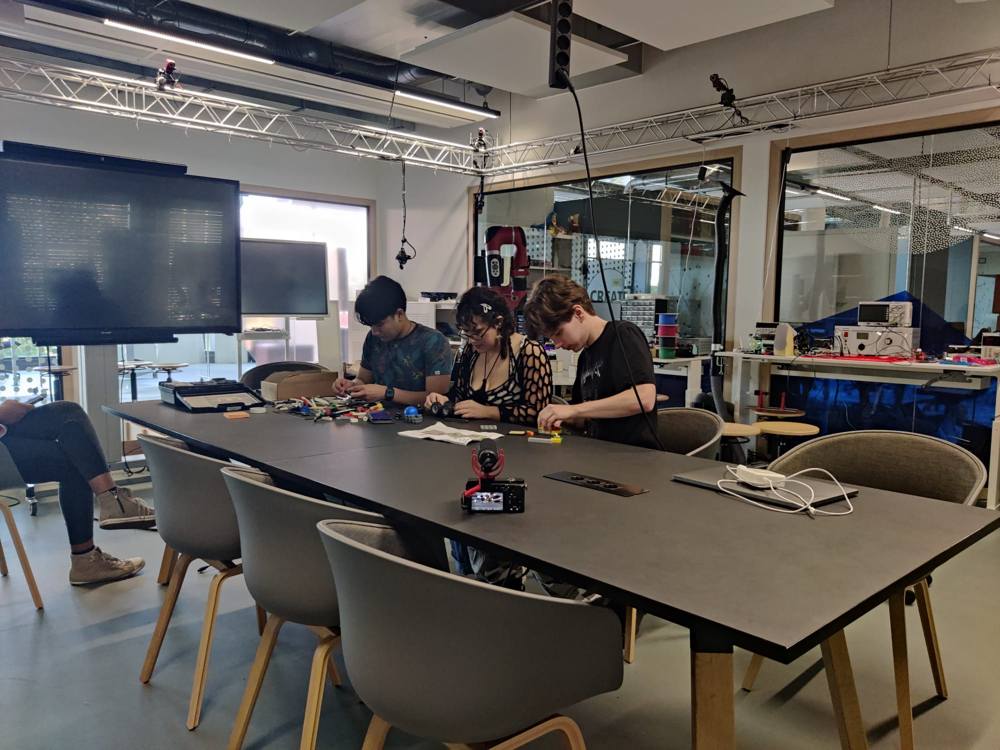

Het Proces
Context van de opdracht Building Attention
Wat is het probleem van de stakeholders en waarom willen ze het toepassen?
Welke problemen ervaren de gebruikers van Strijp TQ en welk probleem heeft de hoogste prioriteit voor de stakeholders om op te lossen?

Het navigatieprobleem van de student
Wie wordt de focus van het project, de student, de docent of de bezoeker van Strijp TQ?
Wat zijn de wensen van de student?
Wat is de kern van het navigatieprobleem van de student?

Het Onboarding Scavenger Hunt idee
Wat voor een interactieve ervaring leert de doelgroep over de locaties binnen Strijp TQ en stimuleert ze om met het prototype te interacteren?

Onboarding Event - Low Fidelity Prototype
Wat is het probleem van de stakeholders en waarom willen ze het toepassen?
Welke problemen ervaren de gebruikers van Strijp TQ en welk probleem heeft de hoogste prioriteit voor de stakeholders om op te lossen?

Onboarding Event - High Fidelity Prototype
Hoe ontwerp je een interactieve ervaring voor nieuwe minor studenten op Strijp TQ zodat ze tijdens het semester snel en efficiënt naar de verschillende locaties kunnen navigeren?
Welke frameworks/APIs kunnen worden gebruikt om de ondersteunende onboarding event applicatie te ontwikkelen?

Advies - Hoe wordt de onboarding game ingezet?
Hoe maak je een onboarding game voor Strijp TQ dat een PLOU kan gebruiken om hun nieuwe studenten bekend en vertrouwd te maken met het gebouw?
Wat is de huidige status van de onboarding applicatie en hoe moet dit verbeterd worden?
